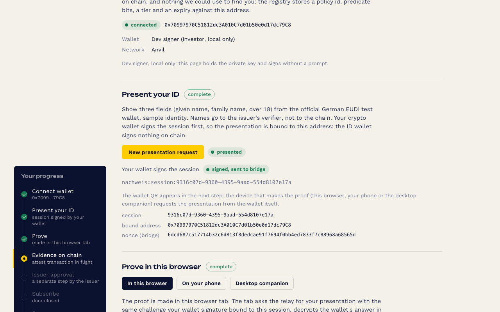

product journey; green on anvil with the official wallet (class W); no-phone operator journey green on Sepolia 2026-09-10, phone leg on Sepolia recorded 2026-09-12The EUDI investor flow
The investor's wallet binds the session, a state test wallet answers with three fields, the proof is made in the browser tab, the issuer approves in a separate on-chain step, the approval becomes a few bits on chain that a fund token and a Uniswap pool both read, and one revoke closes both.
Best Uniswap Stack Contribution (the pool is the second door)